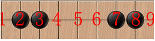

七连结构
#1 七连结构 作者：有志青年 发表时间：2008-1-5 8:17:26
学五子棋已有一段时间了，发现了一个有趣的结构，“连七”（姑且这样称呼），仔细摆弄了一下，真是妙用无穷（本文只探论一条线上没有白子的情况，空间大小暂且不论。有白子的情况请读者自己研究，若发现有妙处的地方的，或是本文还有未写出来的妙处，可以上传，让大家分享你的研究成果）
且看A图：
A
对于这样的排列，黑明显已形成活三，若白在5位置上堵，那黑就只有一个眠三了，若白在1位置上堵，黑可在5、6、7、9四个位置下子，现在来逐个分析。黑若下在5位置，即是冲四；若下在6的位置，亦是冲四；若下在7的位置时，234567将形成六腐结构，但是在9位置仍可形成活三.
来看B图：
B

对于这样的排列，黑也形成了活三。白若在4位置堵就没有什么趣味了。白若在6位置堵，黑有两次冲四机会。白若在1位置堵，这将很有趣，黑先在6位置下子冲四后，又可在7或9的位置再次冲四；若黑先在4下只有一个四。若先走7，再走6，5678是个死四，白可堵在9位置，1234567即是“六腐”结构；若不走6，走9，也能形成两次冲四。
看C图：
C
若黑先在1位置下子，123形成活三，白在1右边堵，123456是六腐结构，白若在4堵，黑可有一个眠三。若黑先在4或5位置下子，可得到两次冲四。先在7下子，和先下1情况类似。若黑先下在9位置，白若在5堵，黑可有两次冲四（空间允许的情况下），白若在9右边堵，黑可在7冲四，黑若在5下将是“四四”禁手。
看D图:
D

若黑先下1（或9），白若在1右边堵时，黑再在4下，可有一次冲四。若黑先下5，冲四总次数最多可达3次。若黑先下4（或6），234形成活三，白若在5位置堵，黑可有一次冲四机会；白若在1位置堵，5或6位置是六腐结构，但是仍可在9形成活三。若黑先下5位置，2345678是六腐结构，但是这六腐结构易消除，即先在1（或在9）下子，冲四次数总共可达4次之多。
看E图：
E
这个和C图结构才是有大用的结构，白没有VCF的情况下，不得不防守，守点有很多选择。这两个结构出现的几率明显比其它四个高得多，也比其它四个有用得多。黑明显形成活三。白若在1堵，黑人若在3、7下是冲四；黑若在6位置下是“四四”禁手；黑若在9位置下子又是一个“六腐”结构。白若在3堵，黑在6、7位置下是冲四。白若在6堵，黑在1、3位置是冲四
看F图:
F
相当对称的棋型。黑若在1（9）位置有一子：若黑在1右边下子有两次冲四；若黑在3位置下时，123456是六腐结构，且1234形成死四；若黑在5位置时是四四禁手；若黑在7位置下时，冲四次数可达4次；若黑在9位置下子时，在3和7位置各有一个死四，此时若再在5位置下时3、7位置都是长连。若黑在3（7）下子，有两次冲四。黑若先在5下子是“四四”禁手，是用子最少的“四四”禁手
到此基本说完，实战中能出现的大概就只有C图和E图。下面列举些例子:
下面这图是我实战中遇到的，不知道大家能否走出杀来（黑先行，5次VCF）
原文地址：http://www.wuzi8.com/Article/Html/1077.html
#2 Re:七连结构 作者：lxlzwd 发表时间：2008-1-14 1:50:12
晕倒,这么基础的东西给说的这么烦琐.....